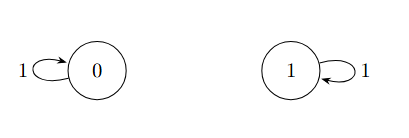
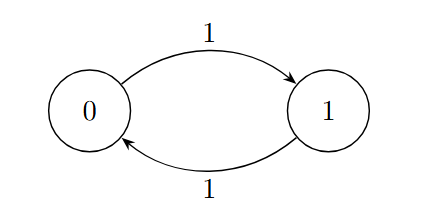

Aula 7
Data: 23/03/2016
1. Revisão
Teorema(Existência e Unicidade de Distribuição Estacionária):
C.M. com matriz de transição \(P\). Para cada distribuição inicial \(\nu\), defina, para \(T \ge 1\):
O limite \(\lim_{T \to \infty} \nu_T = \pi\) existe e \(\pi\) é tal que \(\pi = \pi P\)
Vimos que,
Exemplo de Dependência da Condição Inicial:
Se a cadeia não for irredutível, o limite \(\pi\) pode depender da distribuição inicial \(\nu\):

- Se \(\nu = (1, 0) \implies \pi = (1, 0)\)
- Se \(\nu = (0, 1) \implies \pi = (0, 1)\)
- Se \(\nu = (\frac{1}{2}, \frac{1}{2}) \implies \pi = (\frac{1}{2}, \frac{1}{2})\)
2. Propriedades sob Irredutibilidade
Se, além disso, a cadeia é irredutível, então:
1. \(\pi\) é única.
2. \(\pi(x) > 0\) para todo \(x \in \mathcal{X}\).
Exemplo:

$$\pi = \left( \frac{q}{p+q}, \frac{p}{p+q} \right), \quad p, q > 0$$
Prova da segunda parte (\(\pi(x) > 0)\)
Fixe \(x \in \mathcal{X}.\) Queremos mostrar que \(\pi(x) > 0.\)
Como \(\pi\) é uma medida de probabilidade, existe \(y \in \mathcal{X}\) tal que \(\pi(y) > 0\).
Pela irredutibilidade, existe um tempo \(t = t(y, x)\) tal que \(P^t(y, x) > 0\).
Como \(\pi = \pi P^t\) (pois \(\pi\) é estacionaria):
\(\qquad \Rightarrow \pi(x) = \sum_{z \in \mathcal{X}} \pi(z) P^t(z, x) \ge \pi(y) P^t(y, x) > 0\)
Prova da primeira parte (Unicidade)
Suponha que existam \(\pi_1\) e \(\pi_2\) distribuições estacionárias para a cadeia(\(\pi_1 = \pi_1 P\) e \(\pi_2 = \pi_2 P\))
Lembre que para cara \(t \ge 1\) fixado, \(\pi_1 = \pi_1 P^t\) e \(\pi_2 = \pi_2 P^t\)
Defina \(y = \text{arg min}_{z \in \mathcal{X}} \frac{\pi_1(z)}{\pi_2(z)}\), i.e,
y é tal que \(\frac{\pi_1(y)}{\pi_2(y)} \le \frac{\pi_1(z)}{\pi_2(z)},\quad \forall z \in \mathcal{X}\)
Logo,
$\pi_1(y) = \sum_{x \in \mathcal{X}} \pi_1(x) P^t(x, y) $
\(= \sum_{x \in \mathcal{C}_y^t} \pi_1(x) P^t(x, y),\quad onde \mathcal{C}_y^t = {x \in \mathcal{X}: P^t(x,y) > 0}\)
\(= \sum_{x \in \mathcal{C}_y^t} \frac{\pi_1(x)}{\pi_2(x)} \pi_2(x) P^t(x, y)\)
\(\ge \frac{\pi_1(y)}{\pi_2(y)} \sum_{x \in \mathcal{C}_y^t} \pi_2(x) P^t(x, y)\)
$ = \frac{\pi_1(y)}{\pi_2(y)} \sum_{x \in \mathcal{X}} \pi_2(y) = \pi_1(y)$
$ = \frac{\pi_1(y)}{\pi_2(y)} \pi_2(y) = \pi_1(y)$
\(\Rightarrow \frac{\pi_1(x)}{\pi_2(x)} = \frac{\pi_1(y)}{\pi_2(y)}\) para todo \(x \in \mathcal{C}_y^t\).
Como a cadeia é irredutível, dado \(x\), existe \(t = t(x,y)\) t.q. \(P^t(x,y) > 0\):
3. Teorema de Convergência
Teorema (Teorema de Convergência)
Seja \((X_t)_{t \ge 0}\) uma C.M. com matriz \(P\) irredutível e aperiódica.
Denote \(\pi\) a única distribuição estacionária. Então, existem \(\alpha \in (0, 1)\) e uma constante \(C > 0\) tais que:
Aqui, para duas medidas de probabilidade \(\mu\) e \(\nu\) em \(\mathcal{X}\):
é chamada de distância de Variação Total.
Contra-Exemplo: Cadeia Periódica

Considere uma cadeia com dois estados \(\{0, 1\}\):
Periódica: Período 2
$$\pi = \left( \frac{1}{2}, \frac{1}{2} \right)$$
Analisando as probabilidades de transição a partir do estado 0 (\(P^t(0, \cdot)\)) e do estado 1 (\(P^t(1, \cdot)\)):
Calculando a Distância de Variação Total (\(TV\)) em relação ao estacionário:
4. Distância ao Estacionário e Tempo de Mistura
Defina para \(t \ge 0\):
- \(d(t) = \max_{x \in \mathcal{X}} \| P^t(x, \cdot) - \pi \|_{TV}\)
- \(\bar{d}(t) = \max_{x, y \in \mathcal{X}} \| P^t(x, \cdot) - P^t(y, \cdot) \|_{TV}\)
Propriedades:
1. \(d(t) \le \bar{d}(t) \le 2 d(t)\)
2. \(d(t)\) é não-crescente.
3. \(\bar{d}\) é submultiplicativa, i.e., \(\bar{d}(s+t) \le \bar{d}(s) \cdot \bar{d}(t)\).[Verificar]
Tempo de Mistura (\(t_{mix}\))
O tempo de mistura de uma Cadeia de Markov é dado por:
Pelo item 2 da prop., \(d(t) \le \epsilon, \forall t \ge t_{mix}(\epsilon)\).
O tempo de mistura de referência é:
Proposição: Para todo \(\epsilon < 1\),